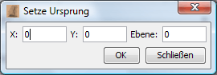

Hier kann man den Koordinatenursprung der Karte anpassen. Bei Wahl des Menüpunktes erscheint folgender Dialog:

Hier trägt man einfach die Koordinaten der Region ein, die künftig auf 0,0 liegen soll sowie die CR-Ebene (falls vorhanden) für die die Änderung gelten soll. Die Koordinaten aller Regionen werden dann automatisch angepasst.
Vorsicht: Diese Funktion ersetzt nicht den URSPRUNG-Befehl! Der Eressea-Server liefert also ungeachtet der Einstellungen in Magellan weiter CRs mit den alten Koordinaten.